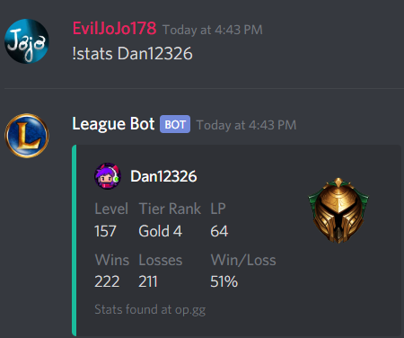
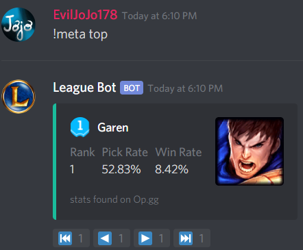

League Bot
Purpose
A Discord bot centered around the League of Legends (LoL) communities. The bot provides features useful for LoL players, including a player stat checker and current meta checker.
Commands
!stats PLAYER
Display player statistics and profile image
!meta ROLE
Display top 25 current meta champion information and using reactions
How It Works
League Bot is a Discord bot made using discord.py, an API wrapper for Discord, allowing for user interactions with the bot in the form of user commands and reaction input.
The data used to output statistics and icons in the form of an emblem is web-scraped using Python's Beautiful Soup 4 library, making use of the Requests library to make HTTP requests to OP.gg.